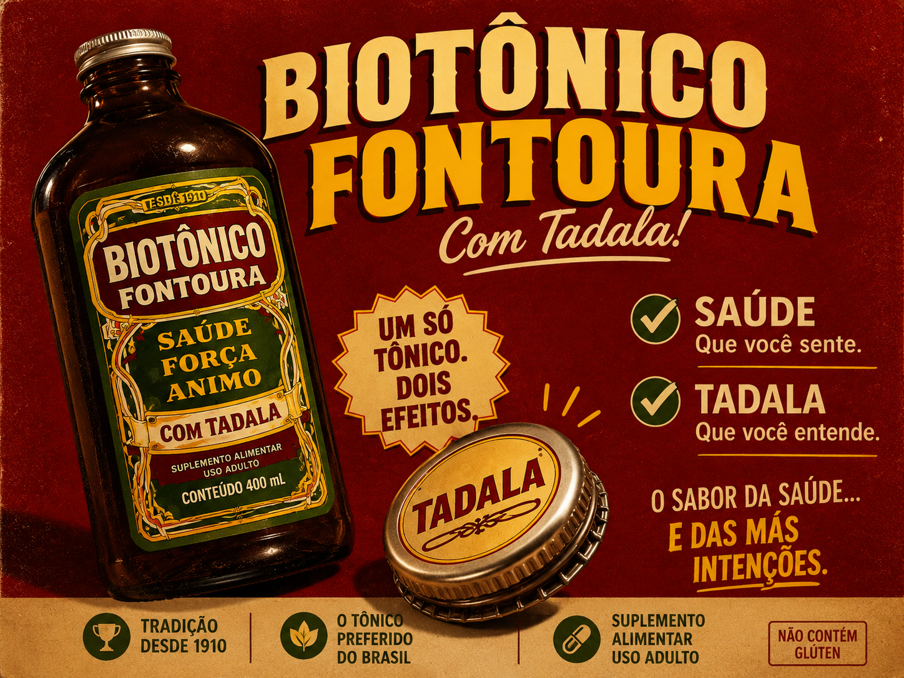

O médico que transformou higiene íntima em pauta nacional com analogias absurdamente engraçadas. Entre rosquinhas, memes e verdades difíceis de ouvir, ele conseguiu ensinar o básico que muita gente ainda esquece.
Conselhos aos agricultores, fases da lua e os melhores dias para pesca. O guia indispensável para o homem do campo e da cidade.

Sangue, Músculos e Nervos. O suplemento que marcou gerações, combatendo a anemia e trazendo vigor para o dia a dia brasileiro.
Descubra em 7 perguntas se você nasceu pra ordenhar vaca ou criar confusão.